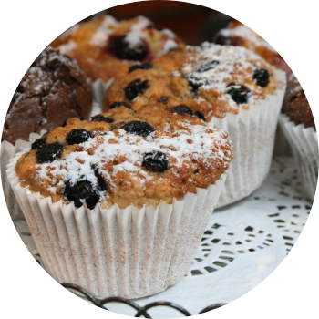
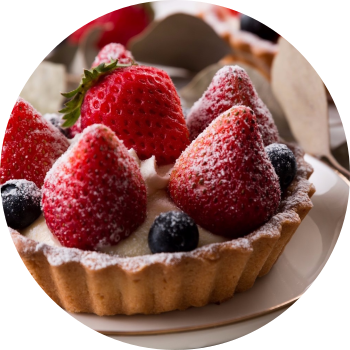

Кафе «Le Peter» представляет собой современную пекарню с исконными французскими традициями хлебного ремесля, где можно остановиться в любое время дня и вечера. В современном французском кафе , оформленном в стиле ар-деко, есть элегантный и уединенный бар, светлая веранда с широкими креслами, большая терраса с видом на площадь и два красивых зала ресторана с выдающимся дизайном. Атмосфера во французском кафе одновременно шикарная и непринужденная!
Дом настоящей французской выпечки
Наша продукция изготавливается в каждом
магазине вручную на глазах у покупателя.
магазине вручную на глазах у покупателя.

Булочка «улитка» с изюмом

Безе, шоколадные взбитые сливки,
покрытые стружкой из темного шоколада.

Безе, бисквит speculoos,
взбитые сливки, покрытые взбитым белым шоколадом.